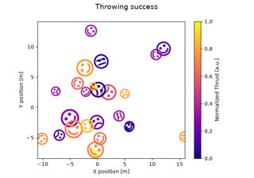

matplotlib.markers.MarkerStyle#
- class matplotlib.markers.MarkerStyle(marker, fillstyle=None, transform=None, capstyle=None, joinstyle=None)[source]#
Bases:
objectA class representing marker types.
Instances are immutable. If you need to change anything, create a new instance.
- Attributes:
- markersdict
All known markers.
- filled_markerstuple
All known filled markers. This is a subset of markers.
- fillstylestuple
The supported fillstyles.
- Parameters:
- markerstr, array-like, Path, MarkerStyle
Another instance of
MarkerStylecopies the details of that marker.For other possible marker values, see the module docstring
matplotlib.markers.
- fillstylestr, default:
rcParams["markers.fillstyle"](default:'full') One of 'full', 'left', 'right', 'bottom', 'top', 'none'.
- transform
Transform, optional Transform that will be combined with the native transform of the marker.
- capstyle
CapStyleor %(CapStyle)s, optional Cap style that will override the default cap style of the marker.
- joinstyle
JoinStyleor %(JoinStyle)s, optional Join style that will override the default join style of the marker.
- filled_markers = ('.', 'o', 'v', '^', '<', '>', '8', 's', 'p', '*', 'h', 'H', 'D', 'd', 'P', 'X')#
- fillstyles = ('full', 'left', 'right', 'bottom', 'top', 'none')#
- get_alt_path()[source]#
Return a
Pathfor the alternate part of the marker.For unfilled markers, this is None; for filled markers, this is the area to be drawn with markerfacecoloralt.
- get_alt_transform()[source]#
Return the transform to be applied to the
PathfromMarkerStyle.get_alt_path().
- get_path()[source]#
Return a
Pathfor the primary part of the marker.For unfilled markers this is the whole marker, for filled markers, this is the area to be drawn with markerfacecolor.
- get_transform()[source]#
Return the transform to be applied to the
PathfromMarkerStyle.get_path().
- markers = {' ': 'nothing', '': 'nothing', '*': 'star', '+': 'plus', ',': 'pixel', '.': 'point', '1': 'tri_down', '2': 'tri_up', '3': 'tri_left', '4': 'tri_right', '8': 'octagon', '<': 'triangle_left', '>': 'triangle_right', 'D': 'diamond', 'H': 'hexagon2', 'None': 'nothing', 'P': 'plus_filled', 'X': 'x_filled', '^': 'triangle_up', '_': 'hline', 'd': 'thin_diamond', 'h': 'hexagon1', 'none': 'nothing', 'o': 'circle', 'p': 'pentagon', 's': 'square', 'v': 'triangle_down', 'x': 'x', '|': 'vline', 0: 'tickleft', 1: 'tickright', 10: 'caretupbase', 11: 'caretdownbase', 2: 'tickup', 3: 'tickdown', 4: 'caretleft', 5: 'caretright', 6: 'caretup', 7: 'caretdown', 8: 'caretleftbase', 9: 'caretrightbase'}#
- rotated(*, deg=None, rad=None)[source]#
Return a new version of this marker rotated by specified angle.
- Parameters:
- degfloat, optional
Rotation angle in degrees.
- radfloat, optional
Rotation angle in radians.
- .. note:: You must specify exactly one of deg or rad.
Examples using matplotlib.markers.MarkerStyle#

Mapping marker properties to multivariate data